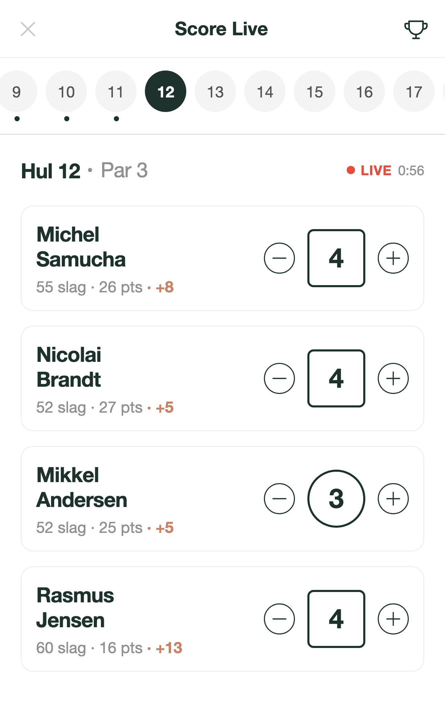
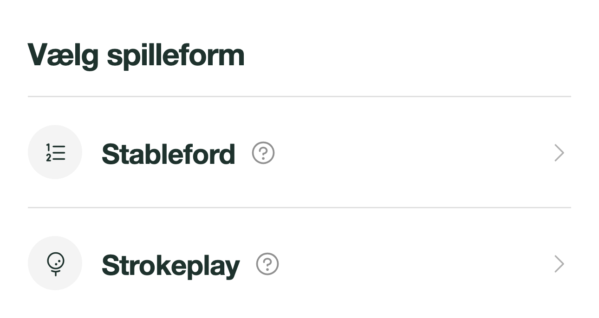
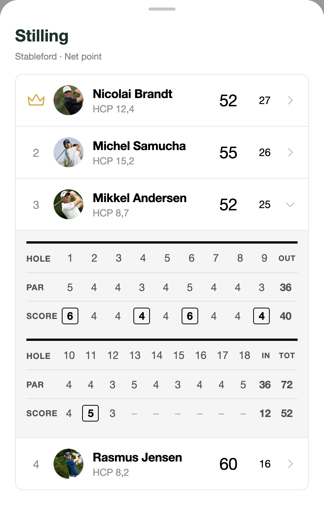
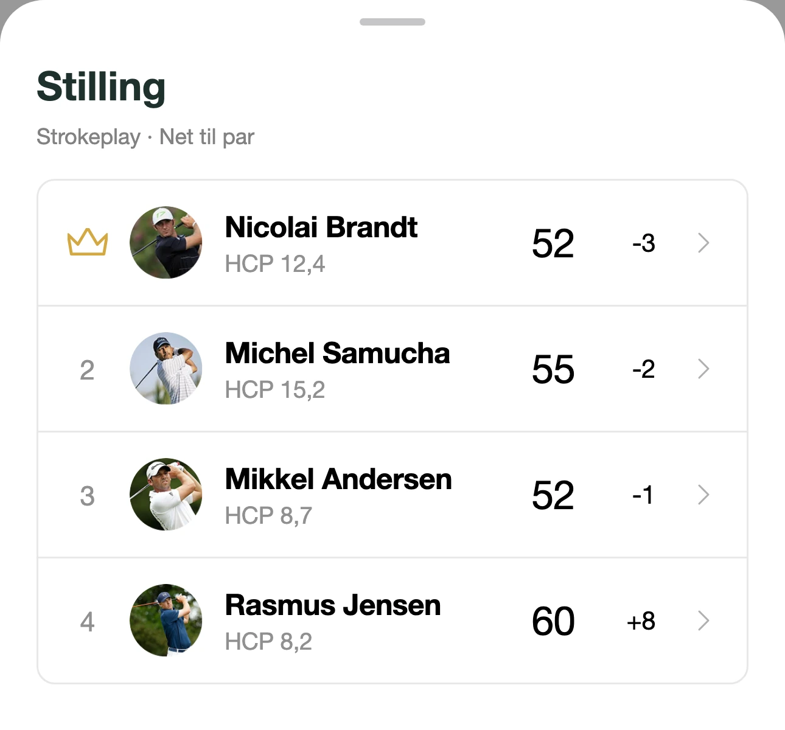
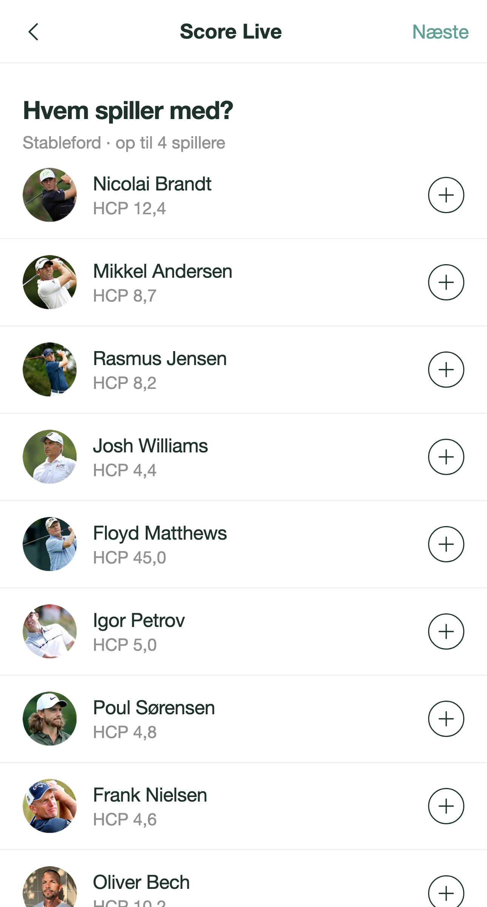
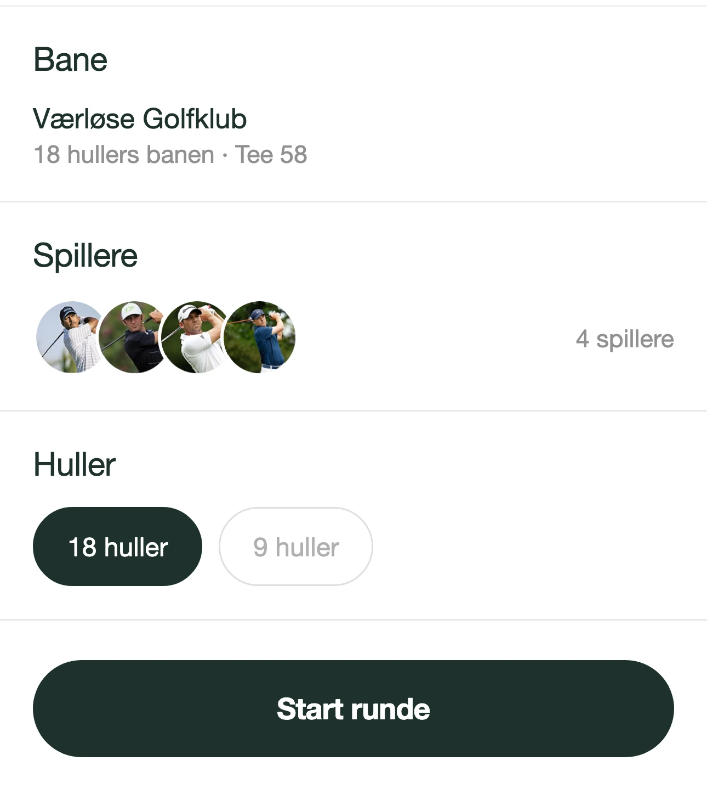
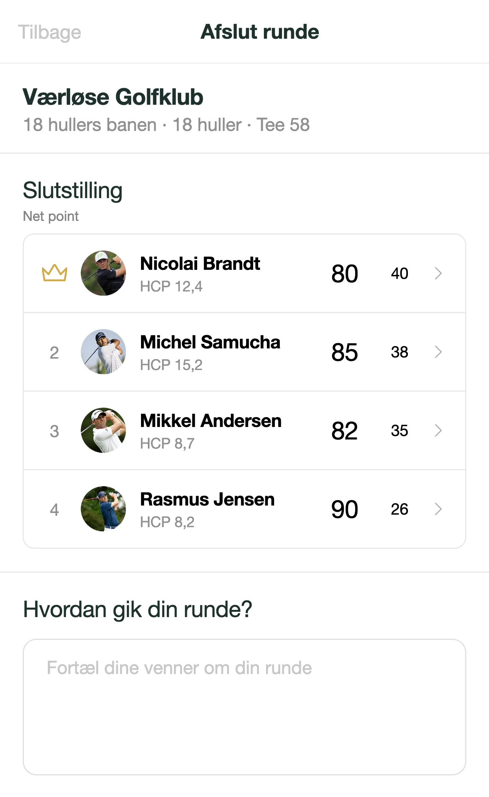

Live score
Kan vi få live score og leaderboard, når vi spiller golf sammen?
Ja. I Golfsocial fører I scoren live, hul for hul, og appen viser stillingen på et leaderboard, mens I spiller. I kan spille stableford eller slagspil, og appen regner med hver spillers handicap.



Sådan fører I live score i Golfsocial
Fra første tee, til slutstillingen står klar.
- Hent Golfsocial i App Store, og opret dig.
- Start en runde, og vælg klub, bane og tee.
- Vælg spilleform: stableford eller slagspil.
- Tilføj dem, du spiller med. I kan være op til fire spillere i en runde.
- Tast slagene ind for alle i bolden, hul for hul. Appen regner point og stilling ud med hver spillers handicap.
- Tryk på pokalen øverst for at se stillingen undervejs. Tryk på en spiller for at se scorekortet hul for hul.
- Når runden er slut, står slutstillingen klar, og runden kommer i feedet. Vælg en medspiller som markør, hvis runden skal tælle med i dit DGU-handicap.
Hvordan ser vi stillingen undervejs?
Tryk på pokalen øverst på skærmen, så ser I stillingen for alle i bolden. I stableford viser den slag og nettopoint, i slagspil slag og nettoscore i forhold til par. Tryk på en spiller, og se scorekortet hul for hul.


Hvordan regner appen med handicap?
Når du tilføjer dine medspillere, kender appen deres handicap. Hver spiller får derfor point ud fra sine egne tildelte slag, og stillingen er regnet netto. Så kan I spille om det samme, selv om I ikke har samme handicap.


Når runden er slut
Når sidste hul er tastet ind, står slutstillingen klar. Runden kommer i feedet, hvor dine venner kan se scoren og skrive en kommentar, og du kan lægge den i en af dine grupper. Vælger du en medspiller som markør, tæller runden også med i dit DGU-handicap.

Omkring 600 golfere har logget næsten 800 runder i Golfsocial.
Golfsocial er gratis at spille med vennerne: live score, spilleformerne, grupperne og feedet.
Spørgsmål og svar
Hvilken golf-app kan vi bruge til live score, når vi spiller med vennerne?
Golfsocial. I fører scoren live, hul for hul, og appen viser stillingen på et leaderboard, mens I spiller. Det er gratis at spille med vennerne.
Hvilke spilleformer kan vi spille med live score i Golfsocial?
Stableford og slagspil. I begge spilleformer regner appen med hver spillers handicap og viser stillingen undervejs.
Hvordan laver man et leaderboard til en runde mellem venner?
Start en runde i Golfsocial, og tilføj dine medspillere. Når I taster slagene ind, laver appen selv stillingen. Tryk på pokalen for at se den.
Hvordan arrangerer jeg en golfturnering for mine venner?
Aftal bane, dato og spilleform, og saml spillerne i en gruppe i Golfsocial. Hver bold fører sin runde med live score, og runderne kan lægges i gruppen, hvor alle kan se scorerne.
Hvordan tæller man stableford-point, når vi spiller flere sammen?
Hver spiller får point på hvert hul ud fra sin egen nettoscore i forhold til hullets par, og den med flest point vinder. I Golfsocial regner appen pointene ud for alle i bolden, hul for hul.
Hvad er stableford i golf?
Stableford er en spilleform, hvor du samler point på hvert hul i stedet for at tælle alle dine slag. Et dårligt hul giver ingen point, men det ødelægger ikke resten af runden.
Hvordan spiller man scramble i golf?
Scramble er en holdspilleform. Alle på holdet slår ud, holdet vælger det bedste slag, og alle slår næste slag derfra. Sådan fortsætter I, til bolden er i hul, og holdet noterer én score på hullet.
Hvad er best ball i golf, og hvordan holder man score?
I best ball spiller hver spiller sin egen bold, og holdets score på hullet er den bedste af spillernes scorer. Spilleformen kaldes også fourball. I fourball stableford tæller holdets bedste stableford-point på hvert hul.
Hvordan spiller man matchplay i golf?
I matchplay, også kaldet hulspil, spiller I om ét hul ad gangen. Den, der bruger færrest slag på hullet, vinder hullet, og den, der har vundet flest huller, vinder matchen.
Kan runden tælle til mit DGU-handicap?
Ja. Vælg en medspiller som markør, når runden er slut. Når markøren har godkendt runden, tæller den med i dit DGU-handicap, så længe I har spillet en HCP-reguleret bane.
Hvad koster det?
Golfsocial er gratis at spille med vennerne: live score, spilleformerne, grupperne og feedet.
Hvor mange bruger Golfsocial?
Omkring 600 golfere har logget næsten 800 runder i Golfsocial (november 2026).